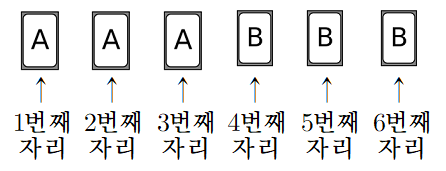

판단'…일 때 …일 확률'이니까 조건부확률이야. 주사위를 던질 때마다 각 눈이 이고 앞의 결과와 상관없이 던지는 독립시행이라, 눈의 순서쌍 가지가 모두 같은 정도로 일어나. 그래서 분모와 분자를 둘 다 순서쌍의 개수로 세면 돼.
카드는 A끼리, B끼리 구별하지 않고 보이는 배열만 따져. 처음 배열이 ㉠의 이야.
에서는 번째와 번째 자리만 문자가 달라. 은 ㉢대로 그대로 두니까 인 다섯 눈은 배열을 바꾸지 못해.
은 에서 눈 하나씩으로만 갈 수 있어. 네 배열의 가짓수를 더하면 전체 가지가 다 나오니까 빠진 배열이 없는 거야.
단축같은 두 자리를 한 번 더 바꾸면 원래대로 돌아오니까 화살표를 거꾸로 읽어도 돼. 그래서 으로 들어오는 길은 에서 나가는 길을 뒤집어 읽으면 끝이야.
판단번 시행을 번 뒤 배열에서 반으로 나눠. 앞 두 번은 에서 나가는 수, 뒤 두 번은 으로 들어오는 수라서 곱의 법칙으로 이어 붙이는 거야.
주의는 번째 눈이 이라는 한 가지야. 에서 배열이 안 바뀌는 눈이 다섯 개라고 를 곱하면 안 돼. 은 ㉢대로 배열을 그대로 두니까 번 뒤도 이나 이어야 하고, 넷째 눈은 가지 또는 가지야.
분모와 분자가 같은 으로 나뉘니까 결국 순서쌍 개수의 비가 돼.